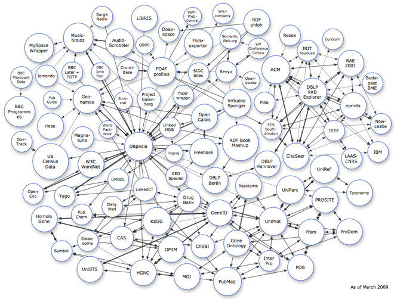
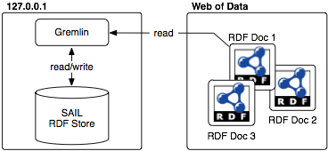

The Web of Data is the graph of RDF data out there on the World Wide Web.1 Other terms used for the Web of Data include the Semantic Web and the Linked Data Web.2 Of particular interest to this section are those URIs on the Web of Data that are Linked Data URIs. A Linked Data URI is a URI that can be resolved in order to retrieve RDF data that pertains to that URI. In many cases, what is returned is the RDF statements (triples or quads) in which that URI is the subject or object. Thus, by resolving a Linked Data URI, more URIs are returned and in effect can be resolved as well. This process of resolving Linked Data URIs is the process of walking the Web of Data.
The Web of Data can be processed using Gremlin. Gremlin comes with a connector to LinkedDataSail, developed by Joshua Shinavier of RPI and TinkerPop. LinkedDataSail is part of the functional language Ripple and is generally useful for creating a Sail representation of the Web of Data.3 To recap, Sail is a collection of interfaces developed by OpenRDF. LinkedDataSail is a particular implementation of the Sail interfaces that treats the Web of Data as a single RDF store. In other words, with Gremlin, through Sail, it is possible to process the Web of Data.
NOTE: The Gremlin code in this tutorial builds on itself. If you skip ahead without going through the tutorial line-by-line, you may encounter errors.
The Mechanics of LinkedDataSail
In order to understand how Gremlin works over the Web of Data, it is important to understand LinkedDataSail. This explanation will come by way of examples. First lets open up a LinkedDataSail connection.
gremlin> g = new LinkedDataSailGraph(new MemoryStoreSailGraph())
==>sailgraph[linkeddatasail]Next, lets set the root vertex to a Linked Data URI. We will use Chris Bizer (one of the main advocates of Linked Data). One of his URIs is http://data.semanticweb.org/person/christian-bizer.
gremlin> v = g.v('http://data.semanticweb.org/person/christian-bizer')
==>v[http://data.semanticweb.org/person/christian-bizer]Next, we will add some default namespaces: rdf, rdfs, owl, xsd and foaf.
gremlin> g.addDefaultNamespaces()
==>null
gremlin> g.getNamespaces()
==>rdfs=http://www.w3.org/2000/01/rdf-schema#
==>foaf=http://xmlns.com/foaf/0.1/
==>xsd=http://www.w3.org/2001/XMLSchema#
==>owl=http://www.w3.org/2002/07/owl#
==>rdf=http://www.w3.org/1999/02/22-rdf-syntax-ns#Now lets locate some of the articles that Bizer has written.
gremlin> v.out('foaf:made')
==>v[http://data.semanticweb.org/conference/iswc-aswc/2007/tracks/in-use/papers/715]
==>v[http://data.semanticweb.org/conference/eswc/2007/demo-3]
==>v[http://data.semanticweb.org/conference/iswc/2006/paper-24]
==>v[http://data.semanticweb.org/workshop/LDOW/2008/paper/6]
==>v[http://data.semanticweb.org/workshop/ssws/2008/paper/main/4]
==>v[http://data.semanticweb.org/conference/iswc/2009/paper/research/301]
==>v[http://data.semanticweb.org/conference/iswc/2009/paper/research/306]
==>v[http://data.semanticweb.org/conference/iswc/2010/paper/495]
==>v[http://data.semanticweb.org/conference/iswc/2010/paper/512]
==>v[http://data.semanticweb.org/conference/iswc/2010/paper/519]
==>v[http://data.semanticweb.org/workshop/cold/2010/BizerEtAlPaper]
==>v[http://data.semanticweb.org/workshop/cold/2010/IseleEtAlPaper]What just happened is that the URI http://data.semanticweb.org/person/christian-bizer was resolved. That is, it was treated as an address to a location where a document resource could be retrieved. This addressed document is an RDF document and thus, contains RDF statements. You can resolve a Linked Data URI by clicking on the link in your web browser. For example, click this link http://data.semanticweb.org/person/christian-bizer and note the data that is returned. The RDF document that is returned is the same RDF document processed by Gremlin. A subset of this RDF document is presented below.
<rdf:RDF>
...
<ns1:Person rdf:about="http://data.semanticweb.org/person/christian-bizer">
<rdf:type rdf:resource="http://xmlns.com/foaf/0.1/Person"/>
<ns2:affiliation rdf:resource="http://data.semanticweb.org/organization/freie-universitaet-berlin"/>
<ns2:affiliation rdf:resource="http://data.semanticweb.org/organization/freie-universitaet-berlin"/>
<rdfs:seeAlso rdf:resource="http://ontoworld.org/wiki/Special:ExportRDF/Chris_Bizer"/>
<rdfs:seeAlso rdf:resource="http://ontoworld.org/wiki/Special:ExportRDF/Chris_Bizer"/>
<owl:sameAs rdf:resource="http://ontoworld.org/wiki/Special:URIResolver/Chris_Bizer"/>
...
<owl:sameAs rdf:resource="http://ontoworld.org/wiki/Special:URIResolver/Chris_Bizer"/>
<ns1:made rdf:resource="http://data.semanticweb.org/conference/iswc-aswc/2007/tracks/in-use/papers/715"/>
<ns1:made rdf:resource="http://data.semanticweb.org/conference/iswc-aswc/2007/tracks/in-use/papers/715"/>
<ns1:mbox_sha1sum>50c02ff93e7d477ace450e3fbddd63d228fb23f3</ns1:mbox_sha1sum>
<ns1:mbox_sha1sum>50c02ff93e7d477ace450e3fbddd63d228fb23f3</ns1:mbox_sha1sum>
<ns1:name>Chris Bizer</ns1:name>
<ns1:name>Chris Bizer</ns1:name>
...
</rdf:RDF>All the statements in the retrieved RDF document are stored in an RDF graph on your local machine. This RDF graphs grows as more URIs are resolved (as more RDF documents are processed) and serves as a cache to the Web of Data. Thus, starting from a root vertex, you can walk the Web of Data using Gremlin — pulling RDF data over the wire and building up a local view of the Web of Data. This architecture is diagrammed below where each RDF document is identified by a Linked Data URI and the overlap of two documents signifies shared URI references.

Lets determine the titles of these articles written by Chris Bizer.
gremlin> v.out('foaf:made').out('dcterms:title').value
==>DBpedia: A Nucleus for a Web of Open Data
==>Fresnel: A Browser-Independent Presentation Vocabulary for RDF
==>DBpedia Mobile: A Location-Enabled Linked Data Browser
==>Benchmarking the Performance of Storage Systems that expose SPARQL Endpoints
==>Executing SPARQL Queries over the Web of Linked Data
==>Discovering and Maintaining Links on the Web of Data
==>LDSpider: An open-source crawling framework for the Web of Linked Data
==>Extending SMW+ with a Linked Data Integration Framework
==>Silk - Generating RDF Links while publishing or consuming Linked Data
==>The R2R Framework: Publishing and Discovering Mappings on the Web
==>Silk Server - Adding missing Links while consuming Linked Data
==>DBpedia internationalization - a graphical tool for I18n infobox-to-ontology mappings
==>LDIF - Linked Data Integration Framework
==>LDIF - Linked Data Integration Framework (Systems Paper)
==>LDIF - A Framework for Large-Scale Linked Data Integration
==>Benchmarking the Performance of Linked Data Translation SystemsFor additional information about LinkedDataSail, see its page on the Ripple wiki as well as its API docs. See also Ripple on Linked Data for examples of native Ripple traversals using LinkedDataSail.
A Recommendation Algorithm over DBPedia

DBPedia is an RDF representation of the popular Wikipedia encyclopedia. For every Wikipedia entry, there is a corresponding DBPedia LinkedData URI. For example, here is the Wikipedia entry for the Grateful Dead http://en.wikipedia.org/wiki/Grateful_Dead. Next, here is the corresponding DBPedia entry http://dbpedia.org/resource/Grateful_Dead. In general, by simply replacing http://**.wikipedia.org/wiki/ with http://dbpedia.org/resource/, you can find the RDF data associated with any particular Wikipedia entry.
In this section, we will do a music recommendation. In short, lets find all those bands that are most related to the Grateful Dead according to how the Grateful Dead URI is embedded topologically within the greater Web of Data. First lets create a LinkedDataSail instance and set the DBPedia Grateful Dead URI as the root vertex. Next, lets add http://dbpedia.org/resource/ as a namespace with a prefix of dbpedia to ensure that our results look concise.
gremlin> g = new LinkedDataSailGraph(new MemoryStoreSailGraph())
==>linkeddatasailgraph[linkeddatasail]
gremlin> v = g.v('http://dbpedia.org/resource/Grateful_Dead')
==>v[http://dbpedia.org/resource/Grateful_Dead]
gremlin> g.addNamespace('dbpedia','http://dbpedia.org/resource/')
==>null
gremlin> g.addDefaultNamespaces()
==>null
gremlin> g.namespaces
==>rdfs=http://www.w3.org/2000/01/rdf-schema#
==>foaf=http://xmlns.com/foaf/0.1/
==>xsd=http://www.w3.org/2001/XMLSchema#
==>owl=http://www.w3.org/2002/07/owl#
==>dbpedia=http://dbpedia.org/resource/
==>rdf=http://www.w3.org/1999/02/22-rdf-syntax-ns#Just to get an idea of the data associated with the Grateful Dead, lets look at all the outgoing edges emanating from the Grateful Dead URI vertex.
gremlin> v.outE
==>e[dbpedia:Grateful_Dead - rdf:type -> http://sw.opencyc.org/2008/06/10/concept/Mx4r-T-rnFM-QdeIl8n-n2pOSA]<dbpedia:Grateful_Dead>
==>e[dbpedia:Grateful_Dead - dbpprop:origin -> dbpedia:United_States]<dbpedia:Grateful_Dead>
==>e[dbpedia:Grateful_Dead - skos:subject -> dbpedia:Category:Musical_groups_established_in_1965]<dbpedia:Grateful_Dead>
==>e[dbpedia:Grateful_Dead - dbpprop:label -> dbpedia:Grateful_Dead_Records]<dbpedia:Grateful_Dead>
==>e[dbpedia:Grateful_Dead - dbpprop:reference -> http://www.rollingstone.com/news/story/5939214/the_immortals_the_first_fifty/]<dbpedia:Grateful_Dead>
==>e[dbpedia:Grateful_Dead - rdfs:comment -> "The Grateful Dead was an American rock band formed in 1965 in the San Francisco Bay Area. The band was known for its unique and eclectic style, which fused elements of rock, folk, bluegrass, blues, reggae, country, jazz, psychedelia, and space rock?and for live performances of long musical improvisation. "Their music," writes Lenny Kaye, "touches on ground that most other groups don't even know exists."@en]<dbpedia:Grateful_Dead>
==>e[dbpedia:Grateful_Dead - dbpprop:pastMembers -> dbpedia:Tom_Constanten]<dbpedia:Grateful_Dead>
...The edge list goes on and on. However, lets identify a set of predicates (i.e. edge labels) that we feel is telling of band “relatedness.” Again, we are trying to create a recommendation engine using the Web of Data. Thus, lets identify what types of relationships would help to determine if one band is similar to another? Here is a subjectively determined list.
dbpprop:associatedActs: if a band is associated with another act, then they must be related in some way.dbpedia-owl:associatedMusicalArtist: if a band is associated with another musical artist, then they must be related.dbpedia-owl:MusicalArtist/associatedBand: if a band is associated with another band, then they must be related.dbpprop:pastMembers: if a past member is in another band, then the two bands should be related.owl:sameAs: if a band URI is the same as another band URI, then they are identical.
Lets save all these edge labels in a list for later use.
gremlin> labels = [g.uri('dbpprop:associatedActs'), g.uri('dbpedia-owl:associatedMusicalArtist'), g.uri('dbpedia-owl:MusicalArtist/associatedBand'), g.uri('dbpprop:pastMembers'), g.uri('owl:sameAs')]
==>http://dbpedia.org/property/associatedActs
==>http://dbpedia.org/ontology/associatedMusicalArtist
==>http://dbpedia.org/ontology/MusicalArtist/associatedBand
==>http://dbpedia.org/property/pastMembers
==>http://www.w3.org/2002/07/owl#sameAsNext, just for the purpose of testing, lets find all the resources related to the Grateful Dead by these types of edges and return their foaf:names.
gremlin> v.outE.filter{labels.contains(it.label)}.inV.out('foaf:name').value
==>Heart of Gold Band
==>The Other Ones
==>Old & In the Way
==>7 Walkers
==>RatDog
==>Brent Mydland
==>Bob Dylan
==>Phil Lesh
==>New Riders of the Purple Sage
==>Bill Kreutzmann
==>Jerry Garcia Acoustic Band
==>Donna Jean Godchaux Band
==>BK3
==>Tom Constanten
==>Grateful Dead
==>Rhythm Devils
==>Donna Jean Godchaux
==>Bobby and the Midnites
==>Bruce Hornsby
==>Jerry Garcia Band
==>Keith Godchaux
==>Phil Lesh and Friends
==>The Tubes
==>Jerry Garcia
==>Bob Weir
==>Mickey HartFor those familiar with the Grateful Dead, this is a good set of artists related to the Grateful Dead. However, lets now do this process for many steps (not just to those directly adjacent to the Grateful Dead). Given the subjectively determined edge labels for “musical relatedness” presented previously, lets perform a grammar-based spreading activation in order to identify bands related to the Grateful Dead. Below is the code to perform a 3 step random walk over the Web of Data emanating from the Grateful Dead URI. Remember, vertices are deemed related to other vertices by the subjectively determined edge labels defined in labels.
m = [:]
v = g.v('http://dbpedia.org/resource/Grateful_Dead')
v.as('x').outE.filter{labels.contains(it.label)}.random(0.5).inV.groupCount(m).loop('x'){it.loops < 4}The results of the spreading activation are stored in the map referenced by m. Note that if you have a slow internet connection, this process may take some time. For this reason, a random(0.5) “coin toss” is provided to half the amount of data processed. The call to println it prints out each vertex traversed to allow the user to watch the walk happen in real-time. Please feel free to remove this without consequence to the computation. Finally, a sorted representation of the ranked results is presented below. The numeric value associated with each key in m is the total flow through each vertex over the spreading activation process. Thus, the vertices with more energy flow are deemed more related to the Grateful Dead.
gremlin> m.sort{ a,b -> b.value <=> a.value }
==>v[http://dbpedia.org/resource/Grateful_Dead]=88
==>v[http://dbpedia.org/resource/The_Other_Ones]=45
==>v[http://dbpedia.org/resource/Jerry_Garcia_Band]=44
==>v[http://dbpedia.org/resource/New_Riders_of_the_Purple_Sage]=42
==>v[http://dbpedia.org/resource/BK3]=41
==>v[http://dbpedia.org/resource/Bob_Dylan]=40
==>v[http://dbpedia.org/resource/Rhythm_Devils]=40
==>v[http://dbpedia.org/resource/Jerry_Garcia_Acoustic_Band]=39
==>v[http://dbpedia.org/resource/The_Tubes]=39
==>v[http://dbpedia.org/resource/Bill_Kreutzmann]=39
==>v[http://dbpedia.org/resource/7_Walkers]=36
==>v[http://dbpedia.org/resource/Donna_Jean_Godchaux_Band]=36
==>v[http://dbpedia.org/resource/Keith_Godchaux]=35
==>v[http://dbpedia.org/resource/RatDog]=34
==>v[http://dbpedia.org/resource/Bruce_Hornsby]=34
==>v[http://dbpedia.org/resource/Heart_of_Gold_Band]=33
==>v[http://dbpedia.org/resource/Phil_Lesh_and_Friends]=32
==>v[http://dbpedia.org/resource/Brent_Mydland]=31
==>v[http://dbpedia.org/resource/Phil_Lesh]=31
==>v[http://dbpedia.org/resource/Bobby_and_the_Midnites]=30
...For those familiar with the Grateful Dead, this is a good representation of related bands. Thus, using Gremlin over the Web of Data, we have created a music recommendation engine. With this engine, we have no data of our own - only the data that exists out there on the Web of Data. The Web of Data creates a new application development paradigm in which there is a clean separation between data provider and data processor.4 This distinction is identified in the diagram below, where a denotes the old paradigm where in which the data provider and data processor are tightly coupled and b denotes the Web of Data paradigm where these two actors are decoupled.

Finally, note that we used the Grateful Dead in our examples, but any musical act URI would work. For example, try the above code again, but set the root to another band. For example, try:
- http://dbpedia.org/resource/The_Postal_Service
- http://dbpedia.org/resource/Ryan_Adams (not Brian Adams)
- http://dbpedia.org/resource/Michael_Jackson
What was presented was a recommendation algorithm for finding musical artists related to some source artist by the labels defined in labels. Using the concepts presented here, its easy to create a recommendation service for other domains (e.g. related movies, TV shows, actors, restaurants, scholarly articles, etc.). Just redefine $labels and pick an appropriate source vertex. Moreover, try the code with multiple source vertices to get the intersection of two spreading activation flows.
1 Rodriguez, M.A., A Reflection on the Structure and Process of the Web of Data, Bulletin of the American Society for Information Science and Technology, volume 35, number 6, pages 38-43, American Society for Information Science and Technology, doi:10.1002/bult.2009.1720350611, ISSN:1550-8366, LA-UR-09-03724, August 2009.
2 Rodriguez, M.A., Interpretations of the Web of Data, Data Management in the Semantic Web, eds. H. Jin and Z. Lv, Nova Publishing, LA-UR-09-03344, 2010.
3 Shinavier, J., Functional Programs as Linked Data, 3rd Workshop on Scripting for the Semantic Web, Innsbruck, Austria, June 2007.
4 Rodriguez, M.A., Watkins, J., Faith in the Algorithm, Part 2: Computational Eudaemonics, Proceedings of the International Conference on Knowledge-Based and Intelligent Information & Engineering Systems, Invited Session: Innovations in Intelligent Systems, eds. Velásquez, J.D., Howlett, R.J., and Jain, L.C., Lecture Notes in Artificial Intelligence, volume 5712, pages 813-820, doi:10.1007/978-3-642-04592-9_101, Springer-Verlag, LA-UR-09-02095, Santiago, Chile, ISBN:978-3-642-04591-2, April 2009.